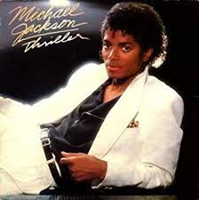
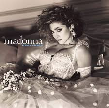
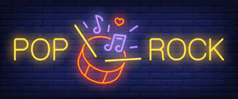
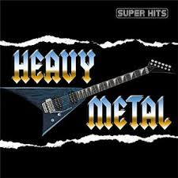
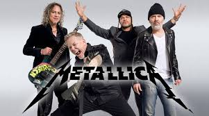
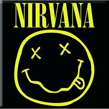
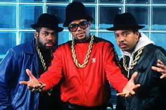
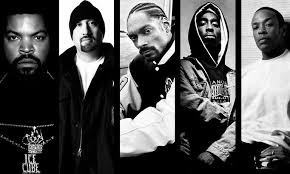

Introduction
Les années 80 sont un berceau pour tout ce qui est émergence de nouveaux styles que ce soit dans la musique ou encore des mouvements qui ont influencés la musique même telle que le mouvement anarchique etc...
Ces années sont surtout retenues pour l'industrie musicale qui fait de la musique une production de masse de chansons dans tout les styles.
Retour en haut de la page
La Pop
Apparue dans les années 60 grâce au Beattles, ce style de musique devient vraiment populaire dans les années 80. On peut citer de grands fondateurs de cette musique comme Michael Jackson surnommé le roi de la pop et Madonna étant considérée comme la reine de la pop.
Michael Jackson a connu un succès phénoménal lors de la sortie de son album "Thriller" avec des ventes estimées à 66 millions d'exemplaires dans le monde, il est l'album le plus vendu dans le monde.
En 84 Madonna en est alors seulement à son deuxième album, et c'est celui qui la verra exploser. Avec « Like a Virgin », elle parvient à réinventer la disco, marquant la décennie et déchaînant l'hystérie. « Get Into The Groove », « Get You Up » ou encore « Material Girl » sont des singles qui on cartonnées ces années-là. Le disque se vend à plus de 20 millions d'exemplaires à travers le monde, dont 10 millions rien qu’aux États-Unis.
En France les artistes marquant le plus la culture pop dans les années 80 sont: jean jacques goldman,Michel Sardou, Francis Cabrel, Renaud ou encore Daniel Balavoine
Retour en haut de la page
La New wave
La new wave ,qui signifie en français« nouvelle vague », est un genre musical qui regroupe plusieurs styles de musiques pop/rock apparus de la fin des années 1970 au milieu des années 1980, aux sonorités électroniques et punk rock. La new wave définissait les nouveaux groupes et artistes pop rock anglo-américains nés après l'explosion du punk, avant qu'elle ne soit identifiée comme un genre musical incorporant musique électronique/expérimentale, disco et pop. Quelques sous-genres et dérivés musicaux ont été créés à partir de la new wave, dont les nouveaux romantiques, l'electronic body music et le rock gothique.

La new wave est l'un des genres musicaux popularisés dans les années 1980 ; il se concrétise sur MTV, et la popularité de nombreux artistes issus de cette scène est due à la popularité du genre présenté sur la chaîne. Milieu des années 1980, la new wave commence à se mélanger avec d'autres genres musicaux.
On peut y retrouver de nombreux artistes tels que The Cure qui est un groupe de rock et de new wave britannique qui a marqué les années 1980 et 1990,Depeche Mode qui est un groupe britannique de quatre garçons originaires de Basildon formé en 1980, ou encore Indochine en France avec leur célèbre son "l'aventurier" qui a marqué le pop/rock français.
Retour en haut de la page
Rock alternatif et Heavy Metal
Le heavy metal, ou heavy métal en français, est un genre musical dérivé du rock apparu au Royaume-Uni et aux États-Unis à la fin des années 1960.
Le sous-genre du heavy metal le plus populaire, le glam metal, a émergé aux États-Unis durant les années 1980. Le centre de cette explosion était surtout situé autour du Sunset Strip de Los Angeles en Californie. La première vague de glam metal se composait de groupes comme Mötley Crüe, Ratt, Dokken, W.A.S.P. et Twisted Sister qui étaient autant influencés par des groupes comme Deep Purple, Kiss ou Black Sabbath que par des groupes de glam rock comme T. Rex et Sweet.le glam metal a dominé les ondes radios du grand public du début des années 1980 jusqu'au début des années 1990.
Beaucoup de sous-genres du heavy metal sont apparus durant les années 1980.
On peut y retrouver cinq catégories majeures: thrash metal, death metal, black metal, power metal, et, finalement, les sous-genres très proches du doom metal et du metal gothique.
Le Trash metal fut popularisé par ce que certains appellent aujourd'hui le Big Four Of Thrash (Les Quatre Grands du Thrash) : Anthrax, Megadeth, Metallica, et Slayer.
Le rock alternatif est un genre de rock issu de la scène underground des années 1980.Le terme « alternatif » a été utilisé dans les années 1980 pour décrire les groupes inspirés du punk rock ayant des contrats avec des labels indépendants et qui ne rentraient pas dans les genres du grand public de l'époque.
Le rock alternatif inclut divers sous-genres qui émergèrent de la scène indépendante des années 1980, comme le grunge, la Britpop, le rock indépendant et le shoegaze.Ces genres ont tous subi l'influence éthique ou musicale du punk, fondatrice pour la musique alternative des années 1970.
Avec le succès de Nirvana et la popularité des mouvements grunge et Britpop au début des années 1990, le rock alternatif a connu un grand succès commercial et de nombreux groupes alternatifs connurent à leur tour un succès international et commercial.
Retour en haut de la page
Le Hip Hop
Le hip-hop, musique rap, ou musique hip-hop, est un genre musical caractérisé par un rythme accompagné de rap et de chants. Le genre se développe en tant que mouvement culturel et artistique aux États-Unis, à New York, dans le Sud du Bronx au début des années 1970.
Le hip-hop new school désigne la seconde vague du hip-hop, ayant émergé entre 1983 et 1984 avec des chansons de groupes comme Run-D.M.C. et LL Cool J. L'âge d'or du hip-hop désigne une période d'innovation ancrée au milieu des années 1980 et au début des années 1990. Des groupes et artistes notables de cette période incluent la Juice Crew, Public Enemy, Eric B. and Rakim, Boogie Down Productions et KRS-One, EPMD, Slick Rick, Beastie Boys, Kool G Rap, Big Daddy Kane, Ultramagnetic MCs, de La Soul, et A Tribe Called Quest.
 Le gangsta rap est un sous-genre du hip-hop qui se consacre le plus souvent à un mode de vie violent et à des conditions de misère au sein de la jeunesse afro-américaine. Schoolly D, N.W.A, Ice-T, Ice Cube, et les Geto Boys en sont des groupes et artistes important de ce style, connu pour mêler paroles sociales et politiques issues du rap politique et histoires de criminels courants dans le gangsta rap.
Dans les années 1980, la diversification du Hip Hop est très importante. New York et la ville de référence dans la création de nouveaux sons hip hop.
Les paroles et thèmes se développent également dans le hip-hop. Le vieux style lyrique des années 1970, est remplacé par des paroles métaphoriques explorant diverses variétés de sujets tels que la société.Le single The Message (1982) de Grandmaster Flash and the Furious Five est le pilier du rap conscient.
Retour en haut de la page
Top 10 des musiques les plus écoutées des années 80
Dans le monde
| Top classement |
Chanson |
Artiste |
| 1 |
Don't Stop Believin' |
Journey |
| 2 |
I Wanna Dance with Somebody (Who Loves Me) |
Whitney Houston |
| 3 |
Billie Jean - Single Version |
Michael Jackson |
| 4 |
Africa |
Toto |
| 5 |
Girls Just Want to Have Fun |
Cyndi Lauper |
| 6 |
Take On Me |
A-ha |
| 7 |
Eye of the Tiger |
Survivor |
| 8 |
Sweet Dreams (Are Made of This) |
Eurythmics |
| 9 |
Wake Me up Before You Go-Go |
Wham! |
| 10 |
Uptown Girl |
Billy Joel |
Selon l'analyse de Spotify
En France
| Top classement |
Chanson |
Artiste |
| 1 |
Mistral gagnant |
Renaud |
| 2 |
Un autre monde |
Téléphone |
| 3 |
L'Aventurier |
Indochine |
| 4 |
Aux sombres héros de l'amer |
Noir Désir |
| 5 |
Les Écorchés |
Noir Désir |
| 6 |
Antisocial |
Trust |
| 7 |
Dès que le vent soufflera |
Renaud |
| 8 |
Marcia Baïla |
Les Rita Mitsouko |
| 9 |
Manu |
Renaud |
| 10 |
Où c'est qu'j'ai mis mon flingue ? |
Renaud |
Retour en haut de la page